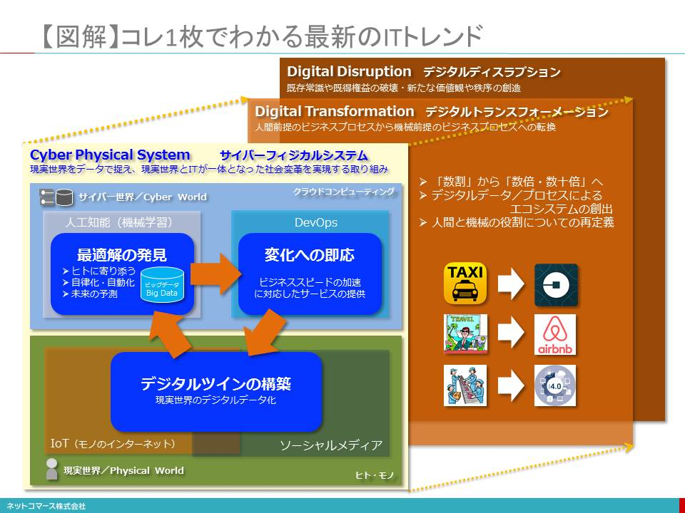
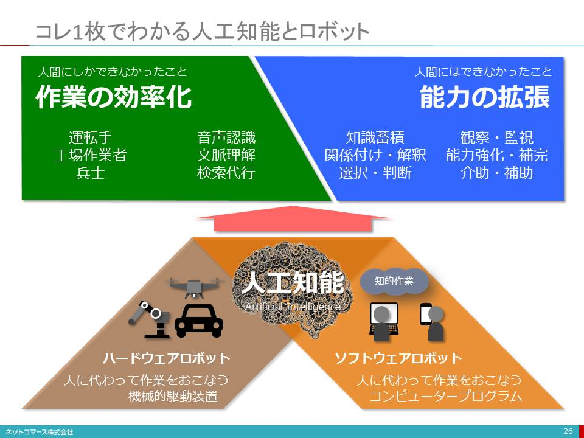
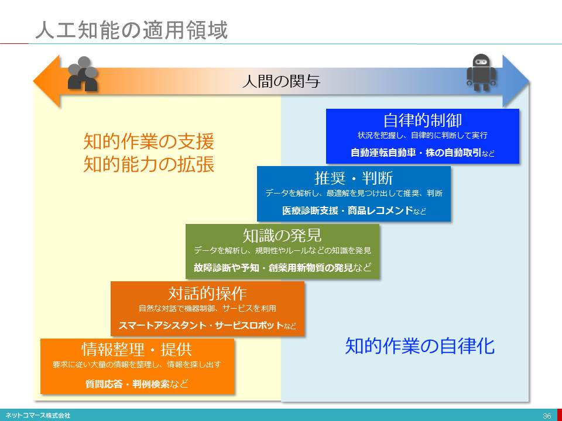
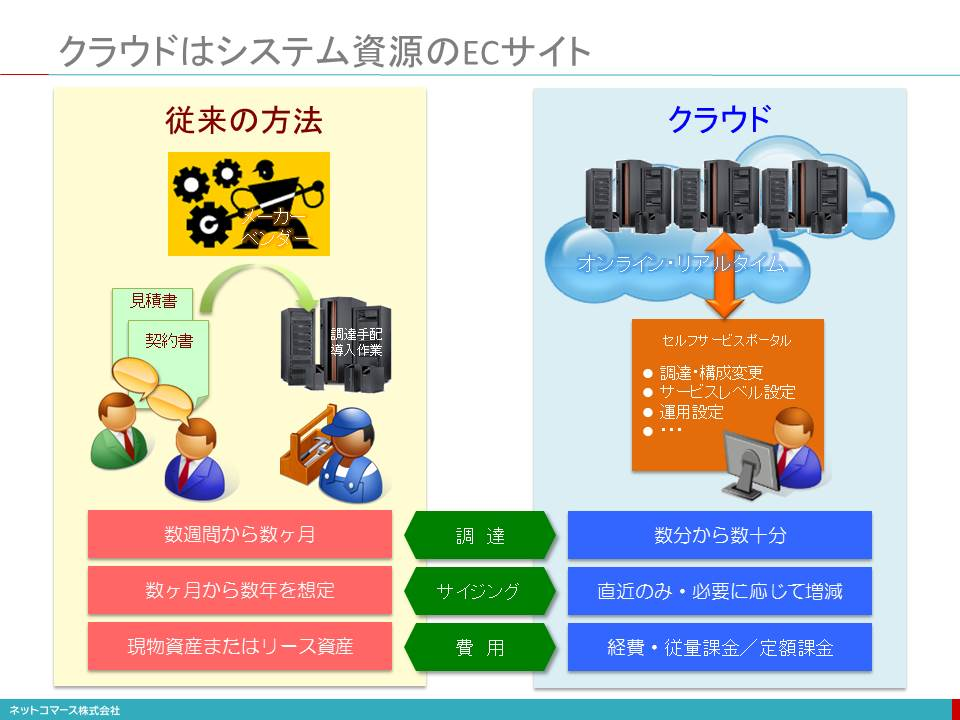
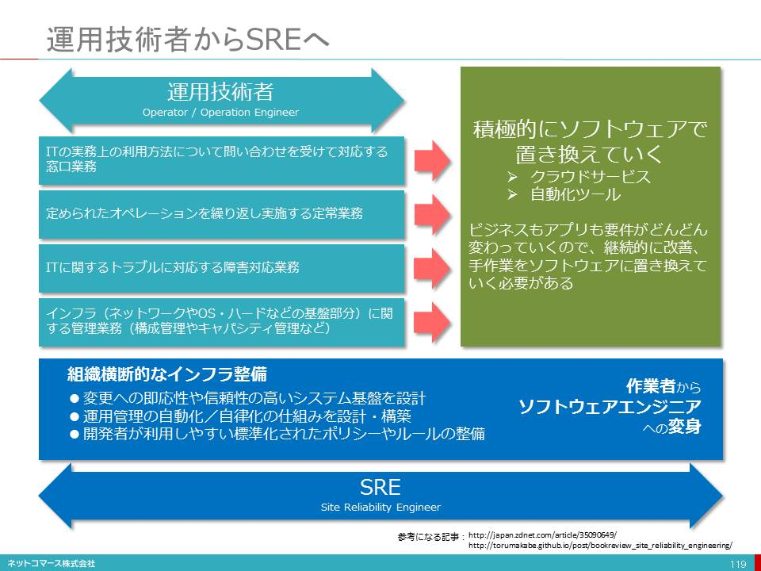
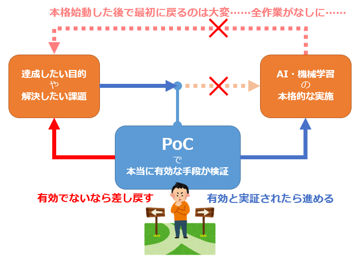

- Sec01-08-9_ICT関連用語集
- 変更履歴
- 2019年10月30日 Rev0.3
- 2019年10月28日 Rev0.2
- 2019年10月26日 Rev0.1
- DAX20-0402-2_これ1枚でわかる最新ITトレンド
- DAX20-0402-2-0_ITの最新トレンド
- 図解
- 
- ■トレンドを知るとはどういうことか？
- トレンドとは「過去から現在を通り越して未来に向かう流れ」
- ニーズの変化を知れば、やがて私たちの社会やビジネスが、どのようになってゆくかを予測することができます。
- これまでの常識を上書きするようなテクノロジーの登場が折り重なり、お互いに影響を及ぼし合っている
- キーとなるテクノロジーは、お互いに役割を分かちながら大きな仕組みとして機能しています。
- ■現実世界をデジタル・データ化するIoTとソーシャル・メディア
- 現実世界（Physical World）
- 「現実世界のデジタル・コピーが作られてゆく」
- そんなアナログな現実世界をモノに組み込まれたセンサーによってデジタル・データとして捉えようという仕組みがIoT（モノのインターネット／Internet of Things）です。
- IoTにより、「現実世界のデジタル・コピーが作られてゆく」と解釈することもできます。
- デジタル・コピーが「サイバー世界（Cyber World）」へ送られていく
- そんな時々刻々の状態を写し撮ったデジタル・コピーが、インターネットの向こうにあるクラウド・コンピューティングの世界、すなわち「サイバー世界（Cyber World）」に送られ、積み上げられてゆきます。
- デジタル・コピーは、「デジタル・ツイン（Digital Twin）」とも呼ばれる
- スマートフォン、ウェアラブル
- 自動車
- 「ソーシャル・メディア」は、デジタル・ツインのもう一つの役割を担う
- また「友達になる」や「フォローする」ことで、ヒトとヒトとのつながり（ソーシャル・グラフ）についての情報を生みだし、インターネットに送り出しています。
- ソーシャル・メディアは、IoTとも融合
- IoTはソフトウェアによって制御され、データはビジネスに活用される
- 「現実世界をデジタル・データ化」する巨大な仕組みになろうとしている
- このように見てゆくとIoTとスマート・メディアは、「現実世界をデジタル・データ化」する巨大な仕組みになろうとしているのです。
- ■最適解を見つけ出す人工知能
- ビッグデータとは
- IoTやソーシャル・メディアから生みだされるデータは、インターネットを介して、クラウドに送られます。
- インターネットにつながるデバイスの数が劇的な拡大を続ける中、そのデータ量は、急速な勢いで増え続けています。このようなデータを「ビック・データ」と呼びます。
- ビッグ・データとして集まった現実世界のデータを、どのような意味や規則性があるを解析し、価値ある情報とした
- このように見てゆくとIoTとスマート・メディアは、「現実世界をデジタル・データ化」する巨大な仕組みになろうとしているのです。
- 解決する手段として、「人工知能（AI : Artificial Intelligence）」や「機械学習（ML：Machine Learning）」が注目を浴びている
- 実用レベルに達した人工知能
- 「人工知能」は、かつて人間の経験や知見を整理したルールや判断基準を登録し、それに基づいて知的（に見える）作業をこなすやり方が主流でした。
- しかし、昨今はビッグ・データを解析し、知的作業をおこなうためのルールや判断基準を作り出す「機械学習」という人工知能の技術を使ったやり方が主流となっています。
- その背景には、「機械学習」に必要なコンピューターやストレージなどのハードウェアの劇的なコスト低下と高性能化、大規模なデータから効率よく規則性や特徴を見つけ出す「人間の脳活動を参考にした」計算方式（アルゴリズム）である「深層学習（Deep Learning）」が開発されたことがあります。
- そのおかげで、画像認識や音声認識、翻訳などの分野では、十分に実用性を持つに至っています。
- 人工知能の技術により、「ITがヒトに合わせる」つまり、ヒトに寄り添うITが普及する。
- 自ら状況を学習し、判断・行動する自動化や自律化の仕組みが、人間にしかできなかったことを代わりにやってくれる。
- ■ビジネス環境の変化に即応するためのDevOps
- 新たなビジネスの仕組み作りは、ヒトが役割を担う
- ビジネス環境の変化に即応できることが生き残りの条件
- ビジネス環境が変化すれば、その変化に対応して新たなビジネス・プロセスを作らなければなりません。その変化のスピードは加速しています。そのスピードに即応できることが、生き残りの条件となるでしょう。
- アジャイル開発や、「DevOps（DevelopmentとOperation）」が不可欠になる
- DevOpsの実現を支えるのが、クラウドサービス
- そうなれば、これまでのようにハードウェアを購入してインフラを構築し、業務要件を洗い出し、仕様書を固めてプログラムを書いているようでは対応できません。
- 変化に即応し、変更変化にも柔軟に対応できるアジャイル開発や、開発したアプリケーションを直ちに本番環境で実行するための開発と運用の新たな取り組みである「DevOps（DevelopmentとOperation）」は不可欠となります。
- DevOpsの実現を支えるのが、クラウドサービス
- そこで、クラウドが提供するアプリケーション・サービス（SaaS：Software as a Service）やアプリケーションに必要となる機能モジュールや開発、実行環境を提供してくれるPaaS（Platform as a Service）といった、インフラを意識せず、その運用も必要としないサービスや、開発や運用の自動化を支援してくれるソフトウェアが、DevOpsの実現を支えてくれるようになります。
- ■サイバー・フィジカル・システム
- デジタル・ツインが築かれていく
- このデジタル・データを受け取り処理するクラウドやそこにつながる一連の仕組みは「サイバー世界と呼ばれ、現実世界の出来事や状態のデジタル・コピー、すなわち「デジタル・ツイン」が築かれてゆきます。
- アナログな現実世界をデジタル・データで捉え、現実世界とITが一体となった社会変革を実現する仕組み
- このように、アナログな現実世界をデジタル・データで捉え、現実世界とITが一体となった社会変革を実現する仕組みを「サイバー・フィジカル・システム（Cyber-Physical System）」と呼んでいます。
- これからの社会基盤
- ■ヒトを前提としないビジネス・プロセスへの転換を模索するデジタル・トランスフォーメーショ
- 「人間が行うことを前提に最適化されたビジネス・プロセスから、機械が行うことを前提に最適化されたビジネス・プロセスへの転換」
- どうしても「人間にしかできないこと」が残るとすれば、それは人間がやりましょう
- この「デジタル・トランスフォーメーション」により仕事流れを変革し、「数割」ではなく「数倍／数十倍」もの変革を成し遂げようとしています。「デジタル・トランスフォーメーション」とは、こんな常識の大転換なのです。
- 「デジタル・ディスラプション（Digital Disruption）」
- 一方で、「デジタル・トランスフォーメーション」は、これまで人間が関わることを前提にしていた仕事の流れを、人間を介さずITだけで完結する仕組みに置き換えることで、既存の業界秩序や既得権益を破壊してしまう「デジタル・ディスラプション（Digital Disruption）」を生みだすことでも覚悟しなければなりません。また、ヒトと機械の役割分担も変えてゆかなければなりません。
- ■ITトレンドとこれからのビジネス
- ビジネスはITトレンドと切り離して考えることはできない
- これまでにないビジネスや生活のあり方、さらには新しい価値観や働き方が、生みだされつつある
- そんな現実を過去から現在、そして未来につながる一連の物語として捉えることです。辞書の解説のように言葉の綴りを暗記しても、意味や価値は分かりません。
- ビジネスとテクノロジーのキーワードを当てはめてみる
- ITトレンドを大きな物語として捉え、そこに自分たちのビジネスやテクノロジーのキーワードを当てはめて考えてみることが、ITトレンドを理解することであり、ビジネスに役に立てることができるのです。
- DAX20-0402-2-1 IoT
- DAX20-0402-2-2 人工知能とロボット
- コレ1枚でわかる人工知能とロボット
- 
- 人工知能の適用領域
- 
- DAX20-0402-2-3 クラウドコンピューティング
- クラウドはシステム資源のECサイト
- 
- クラウドの起源と定義
- 「クラウド・コンピューティングとは、ネットワーク、サーバー、ストレージ、アプリケーション、サービスなどの構成可能なコンピューティングリソースの共用プールに対して、便利かつオンデマンドにアクセスでき、最小の管理労力またはサービスプロバイダ間の相互動作によって迅速に提供され利用できるという、モデルのひとつである」。
- ひと言で言えば、「コンピューティング資源を必要なとき必要なだけ簡単に使える仕組み」ということです。
- さらに、様々なクラウドの利用形態を「サービス・モデル(Service Model)」と「配置モデル(Deployment Model)」に分類、また、クラウドに備わっていなくてはならない「5つの必須の特徴」をあげています。
- DAX20-0402-2-4 モバイルとウェアラブル
- 「ムーアの法則」と「メトカーフの法則」
- ムーアの法則
- インテルの創業者、ゴードン・ムーア氏は、1965年に「半導体の集積密度は18～24ヶ月で倍増する」という法則を提唱しました。
- メトカーフの法則
- イーサネット発明したロバート・メトカーフ氏は、1995年に「通信ネットワークの価値は、接続するシステムの数の二乗に比例する」という法則を提唱しました。
- DAX20-0402-2-5 ITインフラストラクチャと仮想化
- ブロックチェーン
- ブロックチェーン（blockchain）とは、複数のシステムで取引履歴を分散管理する技術のことです。
- これには暗号技術とP2Pネットワーク（通信ノード間で中継を介さず直接通信する）技術が使われており、第三者機関による証明がなくても取引の正当性を証明でき、データの改ざんを困難にしています。
- ブロックチェーンは、もともと「政府や中央銀行による規制や管理を受けることなく、誰もが自由に取引でき、改ざんなどの不正ができないインターネット上の通貨」として開発されたビットコイン（Bitcoin）の信頼性を担保するための基盤技術として、サトシ・ナカモトと名乗る人物が論文中で初めて原理を示したことが誕生の切っ掛けとなっています。
- 多層防衛
- 多層防御とは、PC自体のセキュリティ対策だけではなく、ネットワークやサーバーなど、PCにウイルスが侵入する経路をも考え、その経路上でも対策を施し、ITシステム全体のセキュリティ強度を向上させようというものです。それは、単に技術的な対策に留まるものではなく、運用方法や操作方法、ビジネス・プロセスや戦略まで含んだ広範な取り組みです。
- CSIRT（Computer Security Incident Response Team）
- 「インシデントは必ず起きるもの」という前提で、対応体制を構築し、備えておくことが求められています。このような情報セキュリティ対応の中核を担う
- DAX20-0402-2-6 開発と運用
- これからのシステム開発

- ■アプリケーション開発・変更に迅速に対応するアジャイル開発
- 「業務の現場」であるユーザーと「製造の現場」である開発チームが、ビジネスでどのような成果をあげたいのか、そのために何をしたいのか、その優先順位や使い勝手はどうなのかを共有し、不断の工夫と改善によって無駄を省き、迅速・柔軟に、コストを掛けずに高品質なシステムを開発しようというのです。
- ■本番環境への迅速な移行、継続的なデリバリーを実現するDevOps
- 開発チーム（Development）と運用チーム（Operations）が、お互いに協調し合い、また運用や本番移行を自動化する仕組みなどを積極的に取り入れ、開発と運用が途切れることなく連続する仕組みを実現し、ビジネスを止めずに、継続的にデリバリーする取り組み
- ■迅速な調達を実現するインフラ、高速開発と実行を支えるプラットフォーム
- インフラはSDIや、そのクラウド・サービスであるIaaS
- 予め用意された機能部品を組合せ、連係させてアプリケーションを開発実行させる仕組みや、業務プロセスを記述し、画面や帳票を定義すれば、プログラム・コードを生成してくれるツールなども登場し、開発スピードだけではなく、変更への柔軟性を担保できるように
- アジャイル開発
- アジャイル開発の本質は、「全部作らない」ことです。これが、ウォーターフォール開発と本質的に異なる点です。
- アジャイル開発は、「業務上必要性が高い機能や業務プロセスを選別し、優先順位を決めて、そこにリソースを傾注することで、本当に使うシステムのみを作り上げよう」という考え方です。
- アジャイル開発の狙い
- 予測できない未来を推測で決めさせず、本当に使うシステムだけを作ることでムダな開発投資をさせない。
- 変更要求に柔軟に対応し、納得して使えるシステムを実現する。
- 納得できる予算と期間の中で最善の機能と品質を実現する。
- 超高速開発ツール
- DevOps
- DevOpsとコンテナ管理ソフトウェア
- Immutable Infrastructure と Infrastructure as Code
- マイクロサービス（Microservices）
- イベント・ドリブン方式
- FaaS（Function as a Service）
- APIエコノミー
- 運用技術者からSREへ
- 
- 開発者とサービス・レベルの目標値を共有し、協力しながら開発やテスト、本番稼働に必要なインフラ環境をすぐに使える組織横断的な仕組みを作ることに取り組みます。
- インシデント対応やインフラの安定稼働といった守りの役割から、加速するビジネス・スピードの変化に対応し「ビジネスの成果に貢献する」すること
- 運用者の具体的な業務
- 変更への即応性や信頼性の高いシステム基盤を設計
- 運用管理の自動化/自律化の仕組みを設計・構築
- 開発者が利用しやすい標準化されたポリシーやルールの整備 など
- ITロードマップ2018年版
 図表1-1-1 デジタル・ロジステックスのロードマップ
図表1-1-1 デジタル・ロジステックスのロードマップ- ⑤データサイエンスの民主化
- プログラミング不要で使えるデータサイエンスツールの登場
- 数学・統計の専門知識や高度なプログラミングスキルがないビジネスユーザや業務コンサルタントが、データサイエンス業務を可能にするツールが登場している⇒「データサイエンスの民主化」
- 図表1-3-8 データサイエンスツールのトレンドの変化
- DataRobot
- Alteryx
- Exploratory
- 図表2-1-6 AI関連技術のロードマップ
- 【コラム】データサイエンティスト・プラットフォーム
- 一部のデータ分析業務を自動化し、データサイエンティストの業務を効率化することができる「データサイエンティスト・プラットフォーム」に注目が集まり始めている
- 図表1 一般的なデータ分析の業務の流れ
- 【コラム】人間拡張（Augmented Human）
- 図表1 人間拡張における4つの能力拡張と関連技術
- AIが人間をアシストする「インテリジェント・ワークプレイス」に向かう
- これまでの業務の流れとIT提供のあり方を見直すことで、企業全体としてより高い生産性を目指す仕組みを工夫・構築するものである
- AIが従業員の能力を補い、人間が気づかない部分をコンピュータがアシストすることが可能になりつつある
- 中長期的に本質的に生産性を上げていくために、企業はデジタル・ワークプレイスの実現に向けた戦略を策定し、業務の一貫した流れと従業員エクスペリエンスを向上させるシステムのあり方を検討していく必要が出てくる
- 図表6 働き方改革×テクノロジーのステップ
- AI白書2019
- ディープラーニング（深層学習）のフェーズ
- 学習フェーズ
- ①データから学習によってモデルを作成するフェーズ
- 推論フェーズ
- ②学習後のモデルを用いて新たなデータに対し推論を行うフェーズ
- 典型的なデイープラーニングの開発・利用フロー
-
- 「知財」及び「標準」に「データ」を加えた三次元的な複合戦略が必要
- 知財、データ、標準の三次元的な複合戦略及び検討対象項目
- ＩｏＴ俯瞰図（データ、産業財産権、標準の絡み合い）
- 生活・姿勢
- ワーク・ライフ・インテグレーション
- 自らの人生観を軸に、職業生活と個人生活を柔軟、かつ高い次元で統合し、双方の充実を求めること。
- それによって、生産性や成長拡大を実現するとともに「生活の質を高め、充実感と幸福感を得る」などの相乗効果を目指す働き方。
- 「自己の能力を発揮、自己実現して、創造性のある仕事を効率的、効果的に。日々のアウトプットを検証。」
-
- リベラルアーツは「知識」ではなく「技」、「学ぶ姿勢」
- 「リベラルアーツとは、what（何を）ではなくhow（どうやって）。すなわち、物事の本質を批判的に考えるカと、それを表現する力のこと」【国際基督教大学の森本あんり学務副学長】
- つまり、リベラルアーツとは科目の名前ではなく、科目を学ぶことによって身に付ける技のことを指しているのである。
- リベラルアーツの科目
- ITスキル
- ITストラテジスト
- ステムアーキテクト
- プロジェクトマネジメント
- ネットワーク・データベース
- 情報セキュリティマネジメント
- IT関連
- 守りのIT
- デジタル・ワークプレイス
- デジタル化時代のデバイスやテクノロジーを駆使して、働くプロセスや場所・コミュニケーション、コラボレーションのあり方を新たに組み立てようとする考え方
- BYOD
- 私用端末のビジネス利用
- テレワークソリューション
- 従業員にとって、いつでもどこでも柔軟な働き方ができるインフラやアプリケーションが一貫して提供されることで、仕事をする上での利便性やユーザビリティが向上する
- 事業継続計画（BCP）
- RPA(ロボティック・プロセス・オートメーション)
- 人が端末で行うクリック、コピー、ペーストなどの定型作業をソフトウェアに設定
- 事務スタッフやホワイトカラーの作業を代替してくれる仕組み
- IPA(インテリジェント・プロセス・オートメーション)←RPA
- 画像認識や文字認識、自然言語処理などのコグニティブ（認知）技術や、BPM(ビジネス・プロセス・マネジメント)技術が取り込まれる
- 非定型業務、より高度なビジネスプロセスの自動化も実現可能になる
- 業務の効率化、コスト削減が期待できる
- チャットボット
- 日常会話をインターフェースとしたプログラム
- 今後は何らかの事務処理を代行する「処理代行チャットボット」が増加する
- チャットボットからRPAに指示を出して、各種処理を自動化
- 攻めのIT
- インテリジェント・ワークプレイス
- AIが従業員の能力を補い、人間が気づかない部分をコンピュータがアシストすることが可能になりつつある
- 開発方法論
- アジャイル
- PoC
- Proof of Concept：概念実証
- 何らかの目的を達成するために（主に課題解決のために）例えばAI・機械学習を採用しようとする場合、「そもそもそのAI・機械学習が、目的達成・課題解決に対して本当に有効な手段なのか？」「技術的に実現可能なのか？」「どの期間まで試行錯誤して、どの精度までになれば完了とするか？」などを、本格的に始める前に確認・合意しておくことが大事である
- 
- 方針・施策・法規
- サイバーセキュリティ基本法
- Society5.0
- サイバー空間（仮想空間）とフィジカル空間（現実空間）を高度に融合させたシステムにより、経済発展と社会的課題の解決を両立する、人間中心の社会（Society）
- Society 5.0とは 狩猟社会（Society 1.0）、農耕社会（Society 2.0）、工業社会（Society 3.0）、情報社会（Society 4.0）に続く、新たな社会を指すもので、第５期科学技術基本計画において我が国が目指すべき未来社会の姿として初めて提唱されました
- Society 5.0で実現する社会
- これまでの情報社会（Society 4.0）では知識や情報が共有されず、分野横断的な連携が不十分であるという問題がありました。人が行う能力に限界があるため、あふれる情報から必要な情報を見つけて分析する作業が負担であったり、年齢や障害などによる労働や行動範囲に制約がありました。また、少子高齢化や地方の過疎化などの課題に対して様々な制約があり、十分に対応することが困難でした。
- Society 5.0で実現する社会は、IoT（Internet of Things）で全ての人とモノがつながり、様々な知識や情報が共有され、今までにない新たな価値を生み出すことで、これらの課題や困難を克服します。
- また、人工知能（AI）により、必要な情報が必要な時に提供されるようになり、ロボットや自動走行車などの技術で、少子高齢化、地方の過疎化、貧富の格差などの課題が克服されます。社会の変革（イノベーション）を通じて、これまでの閉塞感を打破し、希望の持てる社会、世代を超えて互いに尊重し合あえる社会、一人一人が快適で活躍できる社会となります。

- サイバー・フィジカル
- サイバー空間とフィジカル空間の高度な融合
- 膨大なビッグデータを人間の能力を超えたAIが解析し、その結果がロボットなどを通して人間にフィードバックされることで、これまでには出来なかった新たな価値が産業や社会にもたらされることになります。

- 新たな価値の事例（ものづくり）
- デジタル・トランスフォーメーション(DX)
- Wikipediaによると
- 「ITの浸透が、人々の生活をあらゆる面でより良い方向に変化させる」という概念である。2004年にスウェーデンのウメオ大学のエリック・ストルターマン教授が提唱したとされる [1] 。
- ビジネス用語としては定義・解釈が多義的ではあるものの、おおむね「企業がテクノロジーを利用して事業の業績や対象範囲を根底から変化させる」[2]という意味合いで用いられる。
- デジタルフォーメーション（デジタル変革）とは、あらゆる情報がデジタル化され、IT技術によって、社会や産業、企業、人のあり方や働き方が変わっていくこと
- クラウドコンピューティングやIoT（モノのインターネット）、AI（人工知能）、ビッグデータ、RPA（ロボットによる業務自動化）などの新しいICT（情報通信技術）を、道具として活用して、創出する変革という概念
- 柔軟にかつ大企業に先駆けて、デジタルトランスフォーメーションに対応していくことが、組織の発展につながる。
- 人海戦術、定型化した作業、精密作業は、匠の技レベルでなければはシステム、機械に置き換わっていく。
- 「つながる工場」「インダストリー4.0」「自動運転」「スマートアグリ」
- 人工知能（AI）, ディープラーニング, ビッグデータ, IoT, M2M. 仮想現実（AR）, ３Dプリンタ等のデジタルを、ITを駆使した新サービスを、一般化する前に先駆的に取り入れることが重要
- 現状認識
- 今は、IoT、ビッグデータ、ロボット、AI等の技術革新による、第4次産業革命の入り口にいる
- 【参照】IT人材白書2018
- あらゆるものがインターネットに接続するIoTの広がり、あらゆる情報がビッグデータとして活用され、AI技術により、様々な分野で定型的な業務はもとより、人海戦術では不可能だった業務まで、AI技術を適用したサービス、ロボットの適用が始まっている
- 既存のビジネスや業務に新技術を取り入れるだけでなく、ビジネスモデルを変え、経済活用のみならず、個人の生活や社会構造まで影響が及ぶ
- 第4次産業革命が進むにつれて、発展するビジネスと縮小するビジネスが明確になっていく
- 時代環境が大きく変わる時、それにそぐわないビジネスは淘汰されていく
- 匠の技的な高度な伝統的技能を要する作業や、旧来の延長線で仕組みの高度化、洗練により、生き残れるビジネスもあるが、現状維持のビジネスの多くは、相対的に意義を失う可能性が高い
- IoT、ビッグデータ、ロボット、AI等の技術を、クラウドコンピューティングやモバイル環境で活用できるようになったことは、少ない投資で事業を立ち上げることが可能であり、中小企業、ベンチャー企業や個人の活躍のまたとないチャンスである
- DX実現シナリオ
-
- 創造性、利便性の高い社会を目指して、知識の利活用の一層の推進を図るために、Digital Transformation時代に対応し、デジタル技術、IT技術を活用して文化資産のデジタルアーカイブシステムの構築、知識インフラの構築、更に効率的な利用環境の普及を目指す。
- ITを活用したシステムの構築・運用に際しては、サービスの機密性、完全性、可用性を損なわないための十分なセキュリティ対策に講じる。
- デジタルトランスフォーメーションとは、
- 組織をデジタルの世界に移行させる変化
- 旧態依然のサービスを捨てて、テクノロジーの進展と共に常に変化し続けるビジネス・モデルを受け入れる時代
- 人やものがデジタルデータで直接繋がり、時空間の制約なく、「業種業態の枠を越えた」新たな仕組みを作り出せる時代の変化
- 形を変革、再編成により、既存の事業にない「デジタルビジネス」が登場しつつある。
- 「デジタル・トランスフォーメーション」によりサービス化、オープン化、ソーシャル化、スマート化の4つの大きな変化が生まれつつある。
- 現代のデジタルネイティブなユーザをターゲットとしたビジネスモデルやビジネスプロセスの変革
- デジタルトランスフォーメーションの効果、
- 業界・業種を越えた企業が連携し、新たなビジネスやサービスを創出していく原動力となりつつある。
- グローバルビジネスの世界に新たな競争原理をもたらそうとしている。
- 中小企業において
- デジタル化の進展を受入れ、それを活用して顧客との関係性強化を図る企業にとっては、大きなビジネスチャンスが到来している。
- 柔軟にかつ大企業に先駆けて、デジタルトランスフォーメーションに対応していくことが、組織の発展につながる。
- 今まで
- これまで企業のITシステムは、業務、生産工程等を効率化して、経営を安定化させることに重きが置かれてきた。
- 単なる効率化だけではビジネスの競争に勝ち残れない
- 従来型のサービスはしばらくは継続できるかもしれないが、デジタルの未来に移行し始めなければ、もう生き残ることができない
- 現在、必要とされているのがデジタルトランスフォーメーションによる大胆かつ、スピーディーな変革が発展への道
- 今後
- 従来から業務の改善のために情報化が進められてきたが、今後はDX時代に、如何にIT、デジタル情報を戦略的に活用できるかが問われる
- サービスの向上、サービスの継続、事業の効率化のために、デジタル化した情報をITによって利活用し、高付加価値の新たなサービスに変遷していく。
- 情報セキュリティ対策の必要性
- しかし、ITを活用してどんなに利便性の高いサービスを提供しても、どんなに業務を効率化しても、緊急事態（自然災害、大火災、感染症、テロ、セキュリティ侵害、、）が発生して、事業資産（人・もの（情報及び設備）・金）、社会的信用が失われ、早期復旧ができない場合は、事業の継続が困難になり、組織の存立さえも脅かされる可能性がある。
- どんな緊急事態が発生しても、事業を継続できるようにする対策を明示しておくことが必要
- 情報セキュリティ対策は、事業継続計画の一つ
- サービスの向上を図るために、情報資産（保有情報（媒体に依らず）、情報機器、情報システム）に対する情報セキュリティ上のリスクを低減させる
- ITを活用したサービスの構築・運用に掛かる費用は、経費ではなく先行投資。リスクに見合った情報セキュリティ対策は、サービスの構築・運用の中で実施すべき先行投資であり、緊急事態が発生した後に対処する経費として想定してはいけない
- 情報システムの構築において
- 即時性が要求されるサービスや提供するサービス内容の多様化・複雑化等に対応するために、業務手続の標準化と徹底した電子化の推進、情報セキュリティ上の要件を満たす前提での外部委託の活用、他業務業態のシステムとの連携等を検討する
- 図書館界において
- 図書館界における電子図書館事業、デジタルアーカイブ構築、出版界における電子書籍、電子雑誌サービスは、既にDX時代を先取りしたものである。
- MLA機関、出版界との連携は必然で、この潮流の更なる進展から取り残されないように、知識インフラの実現形であるナショナルアーカイブサービスを構築し、新たな知識や事業を創出するための情報を提供していく必要がある。
- デジタルトランスフォーメーションに向けたスキル変革の方向性（検討用）【IPA】
- デジタルフォーメーションに 必要な技術と人材【IPA】
- 今後強化したい技術は「AI技術」「IoTシステム構築技術」「セーフティ&セキュリティ」 「シスムズエンジニアリング」
- Connected Industries
- 様々な業種、企業、人、機械、データなどがつながり、AI等によって、新たな付加価値や製品・サービスを創出、生産性を向上
- 現在不足している／今後不足が予想される人材
- 「システム全体を俯瞰して思考できる人材」
- 「ビジネスをデザインできる人材」
- 「IoT等新技術の専門技術者」
- 東京都
- TOKYO Data Highway
- ワーク
- 公務員倫理
- 東京都コンプライアンス
- 職業倫理
- データ
- 知識インフラ
- 次世代IT技術
- ディープラーニング、
- ロボット、
- ビッグデータ、
- IoT、
- クラウドサービス
- サイバーセキュリティ
- サイバー・フィジカル・セキュリティ
- Society5.0, Connected Industriesの実現に向けて、産業界に求められるセキュリティ対策の全体像
- サプライチェーン全体での対策（中小企業向け）
- FIDO(Fast Identity Onlinbe)
- パスワードに代わる認証手段として、指紋や顔画面などを活用した生体認証や、認証結果を完全にやりとりできる「FIDO」の普及が期待されている
- モバイル認証（GSMA Mobile Connect）
- 携帯電話をWebサービス全般の汎用的な認証手段として利用するための「Mobile Connect」が注目されている
- GDPR対応